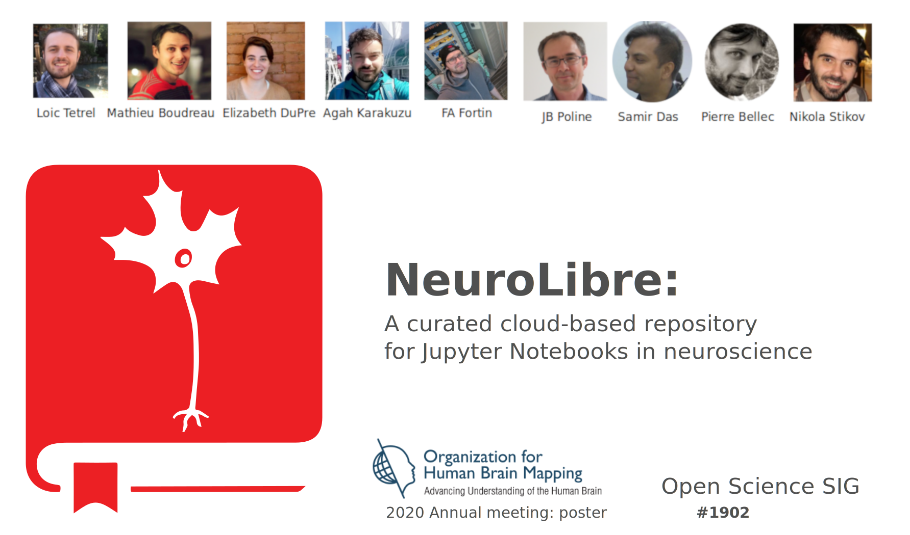
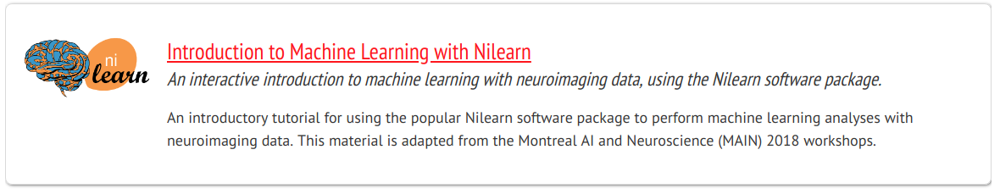
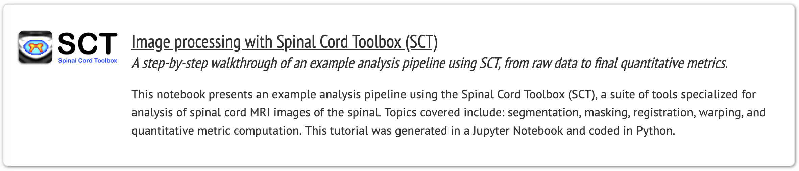
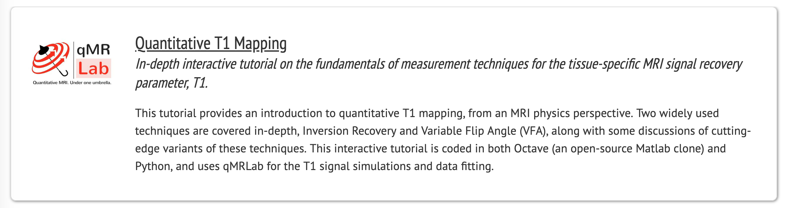
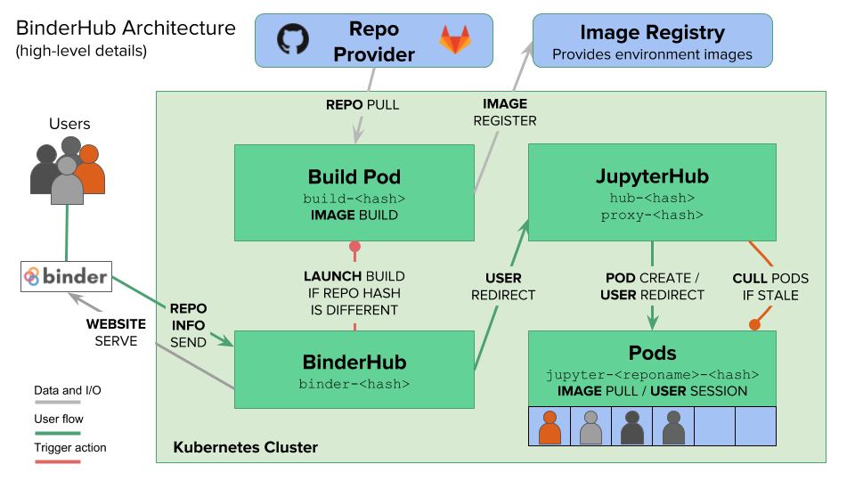

What is needed for open science ?
Reproducibility
Open source
Easy access with interactivity
Peer reviewed
The past of science
The future of science
What can you do with neurolibre ?



Publication workflow
Front-end : Jupyter Books
Back-end : Binderhub

Partners